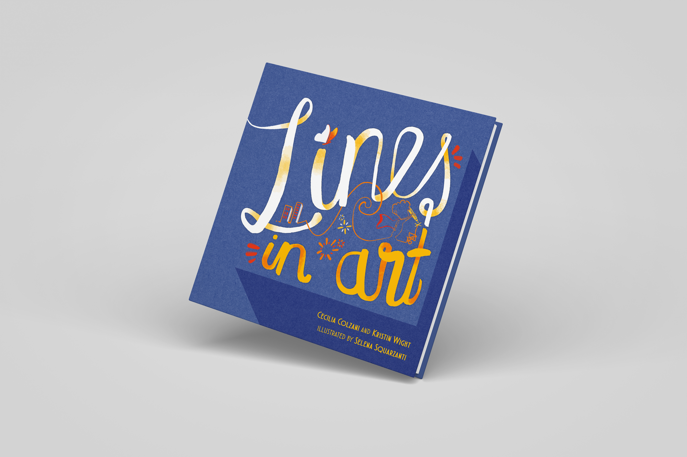
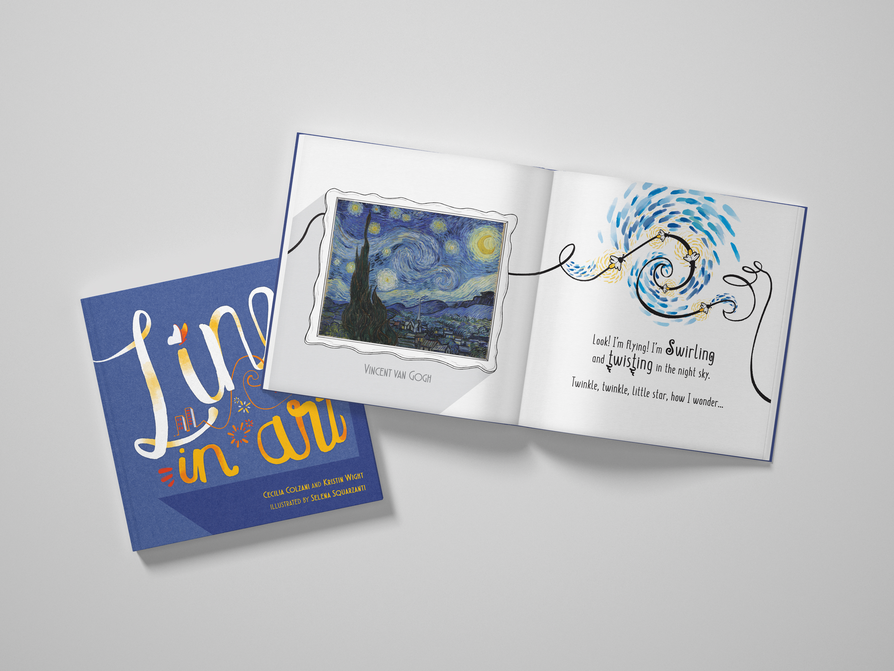

Lines in Art
A children's picture book about real masterpieces. No right answers, just curiosity.
A continuous line travels through pages and into paintings by Van Gogh, Mondrian, Picasso, Matisse, Kandinsky, and Miró. For ages 3–8. Children look, point, wonder, and talk about what they see.

Not an art history book. A book for looking.
Lines in Art does not tell children what to see. A playful line character travels from page to page, entering real masterpieces and reappearing in different forms: curved in Van Gogh's Starry Night, straight in Mondrian's grids, spiraling and zigzagging through Miró and Kandinsky.
Each spread pairs an original artwork with an illustration that responds to it, not explaining it, but opening a way in. Children look closely, connect what they see to their own ideas, and keep the conversation going.
The book is designed to be re-read. It is built around observation, not information. Every child brings something different to every reading, and every rereading surfaces new details, new questions, new connections.
It ends with a question: “Where can you find lines around you?” Children take that question out into the world.
Real art. Original illustrations. A line that connects them.
Each double-page spread pairs a masterpiece with an original illustration by Selena Squarzanti. The illustrations don't explain the art. They respond to it.

The book
Square 8×8 inch hardcover format with matte laminated cover. 40 pages, printed with soy-based inks.

Vincent van Gogh: The Starry Night
The line swirls and twists into Van Gogh's night sky. Children see the same curved movement in both the painting and the illustration.

Piet Mondrian
Mondrian's straight lines become roads and buildings in the illustration. The same visual element, first seen in a painting, then applied to the everyday world.

Illustrated Glossary: 12 line types
Near the end of the book, a simple picture glossary shows 12 different line types: curved, straight, thin, thick, horizontal, vertical, dashed, zig zag, and more. Each word is paired with a visual example.
The book in detail
- Title
- Lines in Art
- Authors
- Cecilia Colzani and Kristin Wight
- Illustrator
- Selena Squarzanti
- Publisher
- Little Oaknut LLC
- Format
- Hardcover, 8×8 inches, 40 pages, matte laminated cover
- Age range
- 3–8 years
- Language
- English
- Artists featured
- Van Gogh, Mondrian, Picasso, Matisse, Kandinsky, Miró, and more
- Production
- Soy-based inks, careful color proofing to honor the artworks
- Ship date
- July 2026 (ships worldwide)
- Award
- ⭐ 5-star review, Readers' Favorite Annual Book Award Contest
- Now available
- Kickstarter: from $27 (campaign closes April 12, 2026)
Who's behind Lines in Art
Cecilia Colzani
Cecilia has worked in art museums and the business world. As a museum docent she discovered what mattered most to her: sparking conversations about artworks. Now a mother of three, she wanted to bring that same curiosity into children's everyday lives. Her background in art history and museum studies shaped a book where children explore art with openness, not instruction.
Kristin Wight
Kristin is a former elementary school teacher who taught in an art-integrated school, with training in Project Zero's thinking routines and Visual Thinking Strategies. In her classroom, she helped children observe carefully and share ideas without pressure to be ‘right.’ That experience is at the core of how Lines in Art works.
Selena Squarzanti
Selena is a graphic designer and illustrator trained at the Brera Academy of Fine Arts in Milan. Her illustrations for Lines in Art are built around the original artworks, not on top of them. They respond to each masterpiece without competing with it.
Early praise
Kickstarter: Project We Love
Lines in Art was selected as a “Project We Love” by Kickstarter before the campaign even launched. The designation is given by the Kickstarter team to projects they find exceptional.
Readers' Favorite Annual Book Award Contest: 5 stars
Lines in Art received a 5-star review from the Readers' Favorite Annual Book Award Contest before its Kickstarter launch.
Help bring Lines in Art into the world
The campaign is live on Kickstarter. Every pledge brings us closer to print. Every child who opens this book gets a new way to see the world.
Back us on Kickstarter →Campaign closes April 12, 2026 · Ships July 2026 · Worldwide